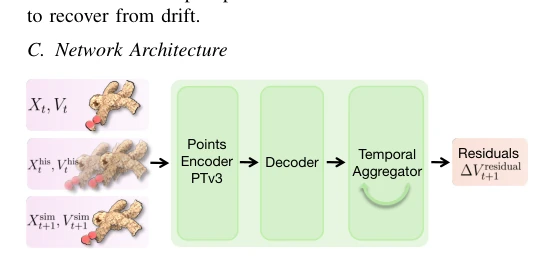
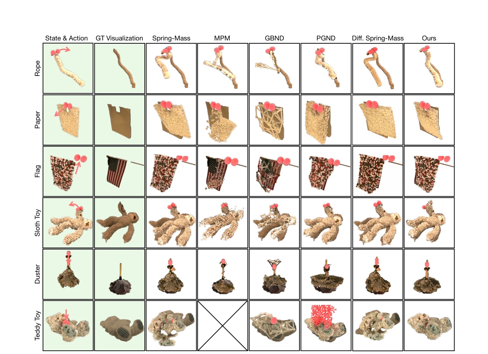
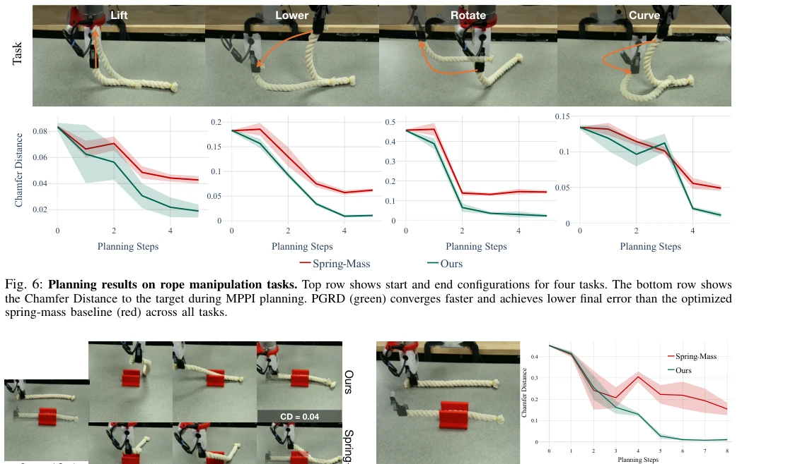
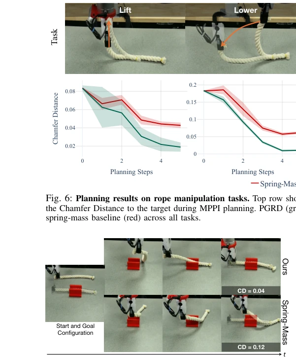
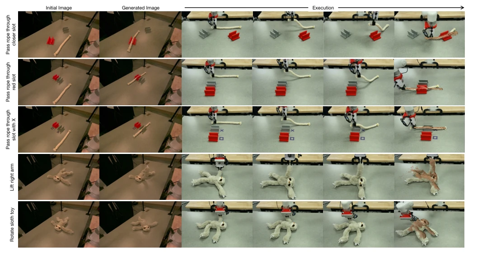
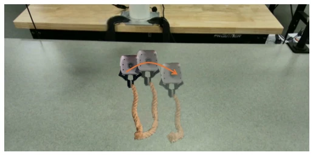
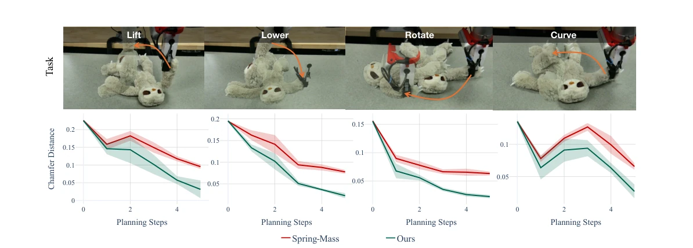

This paper stitches together a "physics + learning" approach for deformable object simulation. Using a spring-mass model as the foundation and neural networks to correct residuals, the logic is clear but the implementation is somewhat "patchwork". The advantage is stability; the velocity residual avoids simulation explosion caused by position correction, offering higher accuracy than pure physics and better generalization than pure learning. The drawback is that although two-stage training decouples the components, optimizing physics parameters is inherently time-consuming and relies heavily on the initial physical model; if the springs are chosen incorrectly, the residual network must struggle immensely. However, it successfully runs on real-world heterogeneous objects (such as a duster) and implements language-conditioned planning, contributing a brick to the "physics engine" of embodied intelligence. It remains to be seen whether deployment on real hardware will cause frame drops due to excessive computational load, given that it must also run Transformer and 3DGS.
Deformable object simulation has long been a tough nut to crack in the robotics field. Pure physics methods (e.g., FEM, MPM) are interpretable but require precise material parameters, which are difficult to obtain in practice, and discretization leads to failure under large deformations [46, 89]. Pure learning methods (e.g., GNN, Transformer) can fit complex nonlinearities but are data-hungry with poor generalization and prone to learning spurious correlations [13, 79]. Existing hybrid methods mostly target low-dimensional robots and are difficult to extend to high-dimensional particle clouds [2]. PGRD attempts to combine both: using physical models to provide priors and networks to correct residuals, addressing the issues of difficult parameter calibration and data generalization. Furthermore, contact-rich interactions lead to gradient vanishing, making differentiable simulation difficult to use practically; PGRD adopts black-box optimization to circumvent this problem.
The overall process is divided into two steps. First, surface points are extracted based on RGBD, a spring-mass model is constructed as the physics backbone, and physics parameters (stiffness, damping, etc.) are optimized via CMA-ES. Second, a neural network is trained to predict velocity residuals. The network architecture includes a Point Transformer V3 encoder to extract spatiotemporal features, a NeRF-style decoder to estimate initial residuals, and a sliding window Transformer to aggregate temporal information. The key innovation lies in the velocity residual formulation, directly correcting velocity rather than position to ensure integration stability. During training, multi-step rollout is employed to expose distribution shift, enhancing long-horizon robustness. The network introduces a gating mechanism to adaptively fuse local predictions with historical corrections. Finally, predicted states can drive 3DGS video rendering or be used for MPPI planning. The loss function minimizes the error between predicted and ground-truth particle positions. Two-stage training avoids instability caused by directly injecting position corrections, enabling the model to handle heterogeneous materials.
Tested on 6 real objects (rope, paper, flag, plush toy, duster, teddy bear). Compared against 5 baselines: Spring-Mass, MPM, GBND, PGND, Diff. Spring-Mass. Metrics include 3D tracking error (MDE, CD, EMD) and visual prediction quality (J-Score, F-Score, LPIPS). PGRD achieves the best results on all objects and metrics, particularly on heterogeneous objects (such as a duster) where it performs significantly better than pure physics or pure learning baselines. In terms of application, the success rate in the rope threading task is 8/10, superior to the baseline's 2/10. Language-conditioned planning also demonstrates the capability to generate target images without pre-collecting target point clouds.
其他图片Other Figures

Fig. 2: Network Architecture. The points encoder extracts spa- tiotemporal features, which the decoder projects to estimate initial residual velocity. Finally, the temporal aggregator refines these esti- mates using a recurrent history to output the final residuals ∆V residual t+1 .

Fig. 4: Qualitative comparison of PGRD on dynamics prediction. Columns shaded in green show the input state with gripper positions (red spheres) and the ground truth object configuration after taking the action. The remaining columns show predictions from each method. PGRD accurately captures deformations across all objects. For the duster, only PGRD maintains stem rigidity while allowing deformation for the feathers. The MPM baseline is not evaluated on the Teddy Toy because it does not model the non-prehensile manipulation used in this experiment. For the Teddy Toy, PGND uses sampled gripper surface points for simulation, which are visualized as red spheres, making this example denser than the others.

Fig. 8: Cable rerouting through narrow slot. Left: distribution of start and end configurations. Right: Chamfer Distance during MPPI planning steps. PGRD achieves lower distance than the spring-mass baseline, successfully threading the rope through the slot in 8 out of 10 trials compared to 2 out of 10 for the baseline.

Fig. 7: Cable Rerouting Execution. Comparison of PGRD (top) and the Spring-Mass backbone (bottom) for rope rerouting through a slot. PGRD navigates the rope through the opening while the Spring- Mass backbone exhibits repeated collisions with the slot edges.

Fig. 9: Execution of PGRD with generated goals. The first column shows the initial image, and the second column shows the language- conditioned generated goal image. Subsequent columns show robot execution from a higher-quality demo camera. The target point cloud from the goal image is overlaid on the last image. PGRD successfully executes a range of tasks, including passing a rope through a specified slot and moving a sloth toy to target configurations.

Fig. 10: Interactive rope manipulation with PGRD rendered using 3DGS. The visualization overlays three timesteps, with later configurations in lighter opacity. As PGRD predicts the dynamics, the 3D Gaussians attached to the particles are updated to render images that maintain visual consistency.

Fig. 11: Planning results on sloth toy manipulation tasks. Top row displays the initial and target configurations for four manipulation objectives. Bottom row plots the Chamfer Distance evolution throughout MPPI planning. PGRD (green) consistently achieves superior convergence compared to the tuned spring-mass baseline (red).